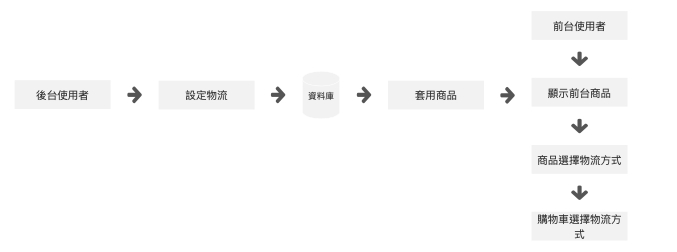

資料收集、市場分析、功能性規劃、流程規劃
為何需要規劃物流？他可以在專案中做到什麼？
後台功能：選擇物流方式是否開啟、更進一步商品是否需要對應物流需前往商品管理做選擇｜也可在後台調整運費
前台功能：商品會顯示可供選擇的物流方式、購物車中讓前台買家選擇需要的物流方式
物流模組關聯模組甚多
一：物流設定(後台) - 後台使用者可設定前台商店是否需要該物流。
二：購物車(前台) - 後台物流設定開啟後，購物車配送方式便能選擇該物流。如超商取貨需注意事項'是否取貨付款？'｜'是否取貨不付款？'｜'是否超商付款不取貨？'｜'是否超關轉店？'｜等..。
三：我的訂單(前台) - 前台買家可從我的訂單模組查看物流狀態，如遇特殊狀態發生也可在此模組查看。如：關轉店便可在此模組重新選擇超商、或物流異常、物流追蹤都可查詢。
四：訂單出貨管理(後台) - 後台使用者可在此模組處理前台買家遇到的問題，如：關轉店便可在此模組重新選擇超商、或物流異常、物流追蹤都可查詢。
｜ 規劃完成度：70% ｜未開發｜
網頁上無法提供更詳細SPEC
請履歷聯絡